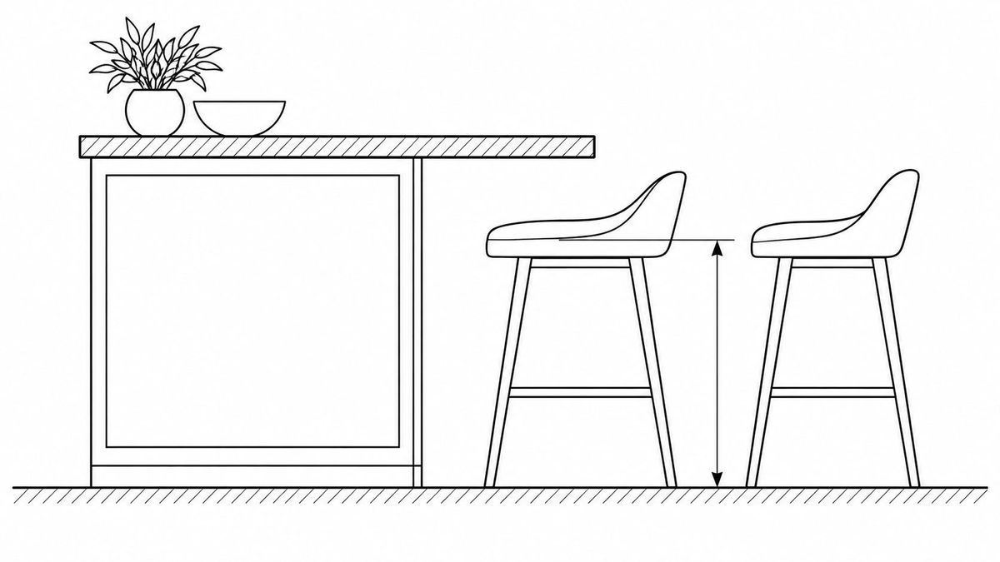

барная стойка в кухне — это высота 1050–1100 мм для барных стульев с сиденьем 750 мм или 900 мм вровень со столешницей. Глубина 300–600 мм, свес столешницы под колени 250–300 мм, проход за стульями 900–1200 мм, ширина места на человека 600 мм. Готовая стойка стоит 25 000–90 000 руб., встройка в гарнитур — 45 000–140 000 руб. Главная ошибка — стойка глубиной 300 мм: за ней нельзя есть, только стоять с чашкой.
Высота и глубина: три рабочих варианта

| Вариант | Высота | Глубина | Стул |
|---|---|---|---|
| Барная стойка | 1050–1100 мм | 300–450 мм | сиденье 750 мм |
| Полубарная (островная) | 900–950 мм | 450–600 мм | сиденье 650 мм |
| Стойка вровень со столешницей | 860–900 мм | 600 мм | обычный стул 450 мм |
| Двухуровневая | 900 + 1050 мм | 600 + 300 мм | оба типа |
Высота 1050–1100 мм удобна для стоячих завтраков и кофе, но есть за ней полноценно нельзя: локти на весу. Для ежедневных приёмов пищи берут 900 мм и стулья с сиденьем 650 мм — разница между сиденьем и столешницей должна быть 250–300 мм.
Сколько места нужно на человека
| Параметр | Норма | Что будет при меньшем |
|---|---|---|
| Ширина места | 600 мм | локти соседа мешают |
| Комфортное место | 700–750 мм | — |
| Проход за стульями | 900–1200 мм | не отъехать, не пройти |
| Свес под колени | 250–300 мм | колени упираются в тумбу |
| Расстояние до плиты | от 900 мм | брызги масла на сидящих |
Стойка на 3 человека — от 1800 мм, на 4 — от 2400 мм. Проход 900 мм считается минимальным: стул с отъездом занимает 500–600 мм, человеку нужно ещё 300–400 мм, чтобы встать.
Куда поставить стойку
| Расположение | Площадь | Плюсы | Минусы |
|---|---|---|---|
| Вместо подоконника | 0 м² | не занимает площадь | мешает радиатору и створке |
| Продолжение гарнитура | 0,6–1 м² | цельный вид | съедает рабочую поверхность |
| Остров или полуостров | 1,5–2,5 м² | зонирует кухню и гостиную | нужна кухня от 10 м² |
| Отдельно у стены | 0,8–1,2 м² | дёшево, мобильно | дробит пространство |
| Подоконник + стойка | 0,3 м² | свет и вид | сложно с подоконником |
Стойка-продолжение гарнитура — самый дешёвый вариант: добавляется 600–900 мм столешницы и 2–3 кронштейна. Отдельный остров требует кухни от 10 м² и проходов 900–1200 мм с двух сторон.
Материалы столешницы
| Материал | Цена за п.м | Плюсы | Минусы |
|---|---|---|---|
| ЛДСП 38 мм | 4 000–9 000 руб. | дешево, много декоров | боится воды и горячего |
| МДФ в эмали | 12 000–22 000 руб. | любой цвет, ремонтопригодна | сколы на кромке |
| Кварцевый агломерат | 18 000–32 000 руб. | не боится воды и ножа | дорого, тяжёлый |
| Массив дуба | 14 000–28 000 руб. | тёплый вид, реставрируется | требует масла раз в год |
| Компакт-ламинат | 9 000–16 000 руб. | влагостойкий, тонкий | кромка видна |
Для стойки, за которой едят, кромку делают скошенной или с радиусом: прямая кромка ЛДСП на уровне локтей натирает предплечья. Свес 250–300 мм обязателен, иначе колени упираются в тумбу.
Хранение под стойкой
| Решение | Полезный объём | Цена |
|---|---|---|
| Глухие тумбы 300 мм | бутылки, банки в один ряд | 8 000–20 000 руб. |
| Выдвижные ящики 450 мм | приборы, салфетки | 12 000–28 000 руб. |
| Открытые полки | книги, декор | 4 000–12 000 руб. |
| Винный модуль | 12–18 бутылок | 10 000–25 000 руб. |
| Ниша под стулья | 2 стула | 0 руб. |
Тумба глубиной 300 мм вмещает один ряд банок — это нормально для бара, но не для кастрюль. Если нужен объём, под стойкой ставят тумбы 450–600 мм и увеличивают свес до 300 мм.
Смета 2026
| Позиция | Стоимость |
|---|---|
| Столешница 1800×600 кварц | 32 000–58 000 руб. |
| Опоры или тумбы | 8 000–28 000 руб. |
| Кронштейны и крепёж | 2 000–6 000 руб. |
| Барные стулья, 3 шт. | 12 000–45 000 руб. |
| Монтаж и подрезка | 5 000–15 000 руб. |
Итого 59 000–152 000 руб. под ключ. Вариант с ЛДСП и простыми стульями укладывается в 25 000–50 000 руб.
Стойка как граница кухни и гостиной
В кухне-гостиной стойка заменяет перегородку: она разделяет зоны, но не отнимает свет и воздух. Работает, если высота стойки не перекрывает линию взгляда сидящего на диване — 900–950 мм достаточно, 1100 мм уже создаёт барьер.
| Задача | Высота стойки | Комментарий |
|---|---|---|
| Разделить зоны, сохранить обзор | 900–950 мм | видно гостиную с обеих сторон |
| Скрыть рабочую поверхность | 1050–1100 мм | стоя видно, сидя — нет |
| Полностью отгородить | 1200 мм + полки | нужна кухня от 12 м² |
| Столовая зона | 750 мм | обычный обеденный стол |
Двухуровневая стойка (900 + 1050 мм) решает обе задачи: со стороны кухни рабочая поверхность, со стороны гостиной барная полка. Минус — стык уровней собирает крошки и требует герметика.
Свет над стойкой
| Светильник | Освещённость | Цена |
|---|---|---|
| Подвесы над стойкой, 3 шт. | 200–300 лк | 6 000–24 000 руб. |
| Трек на 4 светильника | 250–350 лк | 8 000–25 000 руб. |
| Встроенная подсветка в свес | 150–200 лк | 3 000–9 000 руб. |
| Бра на стене | 100–150 лк | 2 500–8 000 руб. |
Подвесы вешают на 750–900 мм над столешницей: ниже — мешают разговору и загораживают лицо, выше — светит в глаза сидящим. Для еды нужен нейтральный свет 3000–3500 К, для бара вечером — тёплый 2700 К на диммере.
Порядок работ
- Замерить кухню и проверить проходы: 900 мм минимум, 1200 мм комфорт.
- Выбрать высоту под сценарий: 1050–1100 мм для бара, 900 мм для еды.
- Определить свес 250–300 мм и глубину тумб.
- Спланировать розетки на стойке: 2–4 на 1800 мм.
- Собрать каркас, выставить по уровню, закрепить к стене или полу.
- Установить столешницу, обработать кромку и стык со стеной.
- Подобрать стулья по высоте сиденья и проверить отъезд.
Ошибки и их цена
| Ошибка | Последствие | Исправление |
|---|---|---|
| Глубина 300 мм для еды | есть невозможно | замена столешницы |
| Проход 600 мм | не отъехать от стойки | перестановка мебели |
| Нет свеса | колени упираются | новый свес 250–300 мм |
| Стойка у плиты | брызги масла | перенос или экран |
Чек-лист перед заказом
- Высота выбрана под сценарий: 1050–1100 или 900 мм.
- Свес столешницы 250–300 мм.
- Проход за стульями не меньше 900 мм.
- На человека 600–750 мм ширины.
- Розетки на стойке предусмотрены.
Частые вопросы
Какая стандартная высота барной стойки?
1050–1100 мм под стулья с сиденьем 750 мм. Для ежедневной еды удобнее 900 мм и стулья с сиденьем 650 мм.
Сколько места нужно на одного человека за стойкой?
600 мм минимум, 700–750 мм комфортно. На трёх человек — стойка от 1800 мм.
Можно ли сделать стойку из подоконника?
Да, если подоконник на высоте 900–1100 мм и не мешает радиатору. Свес внутрь комнаты — 250–300 мм.
Какой проход нужен за барными стульями?
900–1200 мм: стул с отъездом занимает 500–600 мм, человеку нужно ещё 300–400 мм.
Что дешевле — остров или стойка-продолжение гарнитура?
Стойка-продолжение: 25 000–50 000 руб. против 60 000–150 000 руб. за остров с коммуникациями.
Нужны ли розетки на барной стойке?
Да, 2–4 на 1800 мм: ноутбук, зарядки, блендер. Ставят на 100–150 мм выше столешницы или в торец.